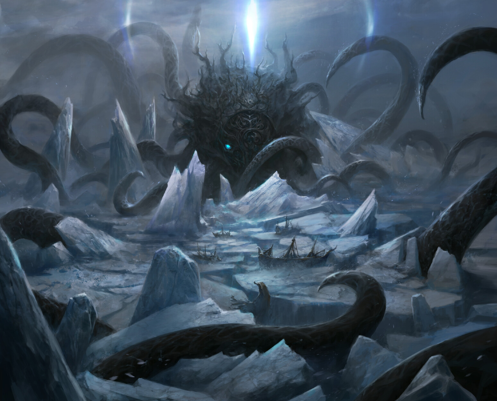
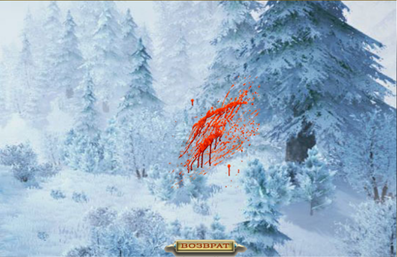
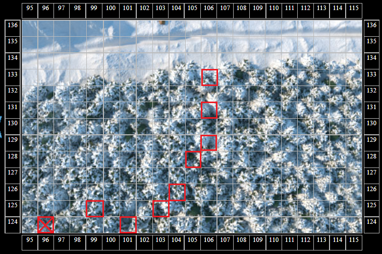
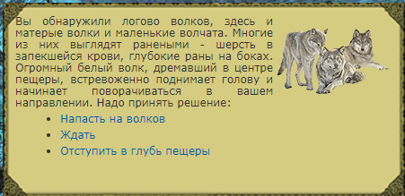
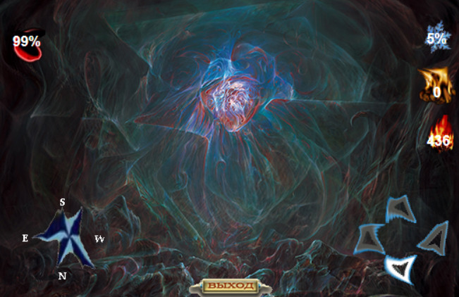
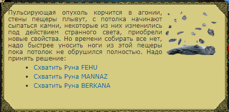
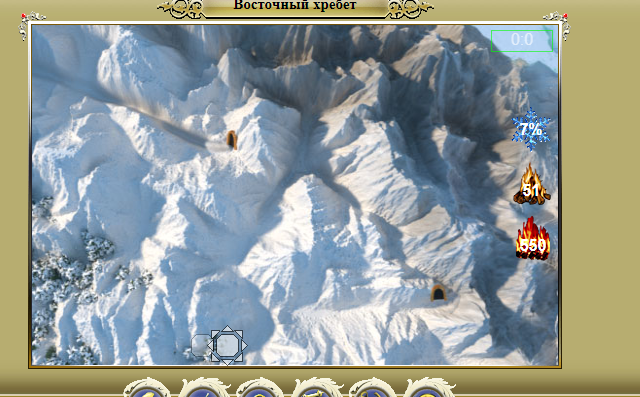

Это цикл статей, посвященный контенту в Северных землях – как пройти, что там есть, что, вероятно, будет и т.д.
Северные земли – контент для высокоуровневых персонажей, прошедших Шпиль Черной башни и Затерянную долину (по сюжетной линии игры), включающий новых монстров и особую механику переохлаждения от перемещения и от особых навыков монстров в бою.
- Как попасть в Северные земли. Снежная башня
- Особенности Северных земель. Локации и контент
- Разломы
- Квест Кровь на снегу.
- Квест Короткое замыкание
Квест “Кровь на снегу”
Описание квеста
В начале 2021 года, в Закрытом мире появился новый, высокоуровневый квест в Северных землях. Квест рассчитан на действительно сильных персонажей, но используя некоторые хитрости возможно его частичное прохождение, что открывает магазин на севере. В квесте присутствуют уникальные для игры механики, о которых мы вкратце поговорим ниже.
- Квест рассчитан на соло прохождение – практически во всех стадиях квеста недоступно вмешательство наемников, создание отрядов и т.д.
- Взять квест можно у Торвальда Крепкого в Лавке Торвальда (103, 137)
- Основная награда за прохождение квеста:
- Открытие магазина на севере
- 410 000 опыта
- 5 600 серебра
- Дополнительная награда за полное прохождение квеста:
- 50 остывшего вулканита
- Руна разлома: 1 шт. из 3-х случайных на выбор
- Осколок иного мира
- Кристаллы спасения работают не во всех локациях квеста (подробнее ниже)
- Квест можно пройти двумя способами
- Во всех стадиях и местах квеста действует механика переохлаждения
- В одной из локаций квеста действует механика нарастающего Безумия
Прохождение. Акт I
Итак, мы пришли на север в деревню Восточная гавань. Направляемся к Торвальду Крепкому за квестом.
Приветствую. Какими судьбами в наших суровых краях? Не часто увидишь здесь новые лица.
Интересно почему это? Может из-за холода снаружи или из-за нежити, йети и лютоволков бродящих по равнинам и лесам?
Есть такое дело. Нежить в наших краях появилась недавно, а волки, волки – настоящие хозяева северных лесов. Мы научились жить с ними рядом, обычно они охотятся в лесах и не нападают на людей, если только не особо холодный год, когда зверья становится совсем мало. Но в последнее время волки регулярно выходят из леса и нападают на всё, что движется, пару раз даже около деревни их видели. Нам бы не помешал опытный воин, рискнувший отправиться в глубины Великого леса и разобраться с этой проблемой. Скорее всего у волков новый вожак, который и ведет их на поиски легкой добычи, убей его и волки больше не рискнут появляться поблизости дорог и деревень. Я вознагражу тебя от лица всех жителей деревни, и свои товары покажу, наверняка найдешь среди них что-нибудь полезное.
То есть отправиться в дебри Великого леса и сражаться с лютоволками на их территории? А еще там бродят йети и нежить. Даже непонятно почему на это дело очередь из добровольцев не выстроилась.
Понятное дело, что дело непростое. Но я никого и не заставляю, арбалет не наставляю, так что решай сам – возьмешься разобраться с лютоволками в Великом лесу или нет.
Хорошо, помогу вам.
Отлично! Тогда отправляйся в лес выследи стаю лютоволков во главе с вожаком и убей его.
Это будет славная охота!
Квест взят, идем искать Вожака лютоволков.
Для этого направляемся в ближайший к деревне лес на юге и ищем следы жизнедеятельности волков. После охоты, волки оставили кровавый след, который и приведет нас к их логову. Кликаем по кровавому следу и ищем следующий след в радиусе ~3 клетки от предыдущего.

Один из вариантов расположения следов (у аватара tolmin). Важное замечание – вам необходимо найти все следы последовательно. Обнаружить логово без обнаружения всех следов невозможно.

Следы приведут игрока к Логову лютоволков:
- Случайное подземелье (различное для всех игроков)
- Работают кристаллы спасения
- Действует переохлаждение
- 4 бревна или 1 искристый уголь на согрев
- Нападают только Лютоволки
- Является подземельем (важно для рейдеров и следопытов)
- Размер: 33×33
В одном из самых дальних от входа тупиков подземелья обнаруживаем Вожака лютоволков.

Аватар обнаруживает, что с волками что-то не так – многие из них ранены после страшной битвы с неизвестным врагом, а сам Вожак не стремится нападать на игрока. Предстоит сделать выбор.
На данном этапе квест становится нелинейным:
- Можно убить Вожака и всю стаю
- Можно проявить выдержку и последовать за стаей
Прохождение. Акт II – следуем за стаей
Рассмотрим вначале прохождение, в котором жизнь стаи лютоволков сохранена.
Аватар решает последовать за Вожаком лютоволков и выходит из пещеры. Лютоволки явно куда-то ведут игрока, стремясь что-то продемонстрировать – вероятно то, с чем они недавно столкнулись, и что вынудило их охотиться в непосредственной близости к деревне.
Через пару десятков шагов аватар обнаруживает себя идущим навстречу леденящему, штормовому ветру – переохлаждение растет с каждым шагом на ~10% и нападают сильные монстры (Баньши, Йети, Ледяные охотники).
Аватар сделает несколько шагов вместе с волками навстречу ветру:
Внезапно поднявшийся ледяной ветер дует сквозь деревья прямо вам навстречу.
10% переохлаждения, бой с монстрами
Ледяной ветер становится сильнее, от него не спасает одежда и доспехи.
20% переохлаждения, бой с монстрами
Ветер усиливается и становится ураганным, от него негде спрятаться. Никто не протянет здесь долго.
30% переохлаждения, бой с монстрами
Не в силах больше бороться с ветром и холодом, волки отступают.
40% переохлаждения, бой с монстрами
Суммарно игроку необходимо будет провести 4 боя с охлаждением 10-20-30-40% – монстры нападают в данном участке пути каждый шаг и помощи от наемника получить невозможно – вмешательства запрещены. Лютоволки также не помогают нам в бою. Кристаллы спасения на данном участке не работают. Это одно из самых сложных мест в квесте – игроку стоит подготовиться: взять мощные эликсиры и зелья из волшебного магазинчика, собрать несколько кислотных зелий из мшистых гор, захватить с собой сосульку на 200% здоровья и маны.
В случае поражения в данной локации, игроку нужно будет вернуться обратно самостоятельно – волки будут терпеливо ждать там, где вы их оставили.
Петляя среди переходящих в годы ледяных холмов, волки привели вас к малозаметному входу в пещеру.
После того, как волки отступят, вы направитесь за ними в обход. Стая приведет аватара к Скрытому проходу.
- Случайное подземелье (различное для всех игроков)
- Работают кристаллы спасения
- Действует переохлаждение
- 4 бревна или 1 искристый уголь на согрев
- Враги:
- Аналогичные с Разломами
- Является подземельем (важно для рейдеров и следопытов)
- Размер: 29×29
После прохождения Скрытого прохода, аватар оказывается позади бушующего шторма, что позволяет пройти к его источнику – Мерцающая пещера. Чтобы попасть в Мерцающую пещеру, необходимо пойти вправо после выхода из Скрытого прохода.
На всякий случай запомните координаты Скрытого прохода – на случай, если придется вновь идти до Мерцающей пещеры.
Прохождение. Акт III – в мультипещере безумия
Мерцающая пещера – источник бед Лютоволков и место появления различной нежити, наводнившей Северные земли.
- Случайное подземелье (различное для всех игроков)
- Не работают кристаллы спасения
- Действует переохлаждение
- 4 бревна или 1 искристый уголь на согрев
- Действует механика нарастающего Безумия:
- Чем больше Безумие, тем сложнее играть
- При безумии 100% аватар отправляется в деревню с парой травм – придется вновь проходить Скрытый проход для входа в Мерцающую пещеру
- Растет на 1% каждые 4 шага по подземелью – таким образом, вам необходимо пройти подземелье за 400 шагов
- Для сброса Безумия можно покинуть подземелье кнопкой “Выход”, сделать шаг влево-вправо (на игрока нападут монстры) и вновь войти в подземелье – безумие обнулится и игрок окажется на точке входа в Мерцающую пещеру. Таким образом игроку не обязательно телепортироваться в деревню каждый раз, когда безумие приближается к 100%.
- Враги:
- Аналогичные с Разломами
- Является подземельем (важно для рейдеров и следопытов)
- Размер: 33×33
Бродим по Мерцающей пещере, наслаждаемся Безумием и в одном из тупиков обнаруживаем Мерцающее нечто:

Стен пещеры не видно, они покрыты пульсирующим покровом из кишащих щупалец, костей, клыков, глаз. А в углублении, которым заканчивается коридор, расположилось нечто… пульсирующая и переливающаяся опухоль, из которой в пещеру льется неземной свет, свет который проходит через кожу, плоть, кости, меняет их, выворачивает наизнанку. Этот свет манит к себе, вы испытываете непреодолимое желание слиться с ним, раствориться, стать единым целым. Ноги отказываются делать шаг назад, вы даже не можете отвести взгляд от этого отвратительного переливающегося пятна. Остается один путь – вперед, уничтожить ЭТО или навсегда стать его частью.

После победы над Мерцающим нечто, забираем первую пачку наград – 1 случайная Руна разлома из 3-х на выбор. Отправляемся в деревню, хвалиться перед эскимосом.
О, какие гости! А волки, говорят, перестали появляться вблизи деревни. Неужели твоих рук дело?
Ох, я даже не знаю с чего начать. В общем волки сбежали из глубины леса от какой-то неведомой… штуки, которая неизвестно откуда возникла в одной из пещер под горами Восточного хребта, такое ощущение что проникла к нам из другого мира. Премерзкая скажу я тебе штука, и похоже она пыталась выбраться из той пещеры наружу, тогда волки бы стали наименьшей из ваших проблем, поверь мне. В общем с огромным трудом мне удалось уничтожить это нечто, думаю после этого волки и вернулись в свой законный лес, рядом с деревней им делать больше нечего.
Ну и дела! Слыхал я всякие рассказы о горах Восточного хребта, но такого себе и представить не мог. Так или иначе, благодарность тебе выражаю от лица всей нашей деревни. Вот твое серебро за этот нелегкий труд, а еще можешь взглянуть на мои товары, обновляются они не часто, но зато ты таких диковинок даже на столичном рынке не найдешь.
Хорошо, буду заглядывать на огонек.
Квест выполнен – открывается доступ в магазин и нам дают символические крохи опыта и серебра. Волки целы, нежить отброшена.
Теперь рассмотрим альтернативный вариант прохождения.
Прохождение. Акт II (альтернативный) – расправляемся с лютоволками
Принимаем решение напасть на лютоволков, как и просил нас квестодатель. Бой со стаей вожака мало чем отличается от боя с обычной стаей лютоволков – стая у Вожака немного сильнее обычных лютоволков, а сам Вожак является высокоуровневым лютоволком.
После победы над Вожаком, идем в деревню сдавать квест. Получаем крохи опыта и серебра и открытый магазин. Квест выполнен.
Однако Мерцающее нечто еще не побеждено. Чтобы закрыть это недоразумение, аватару придется самостоятельно, без наводки волков обнаружить Мерцающую пещеру.
Отправляемся на юго-восток в сторону Мерцающей пещеры. Аватару, как и в прохождении с лтоволками, придется пройти через леденящий ветер, однако если с волками игроку нужно сделать максимум 4 шага с максимальным охлаждением 40%, то без лютоволков придется идти до конца – переохлаждение достигнет ~60% в последнем бою

То есть основной сложностью альтернативного прохождения квеста является локация с сильнейшим переохлаждением – пройти её без волков может только чрезвычайно сильный персонаж (или персонаж со специальным билдом конкретно под данный квест). При этом в альтернативном прохождении игроку не нужно проходить Скрытый проход – аватар сразу идет к Мерцающей пещере.
Дальнейшее прохождение полностью аналогично Акту III прохождения в данной статье, за исключением того, что квест уже сдан и не получится рассказать Торвальду о Мерцающем нечто.
Залючение
Квест “Кровь на снег” предоставляет игроку очень интересный игровой опыт – подобного в Закрытом мире еще не было. В статье сознательно не раскрыты подробности механики Безумия, чтобы искатели приключений самостоятельно прошли этот путь.
Альтернативное прохождение квеста (расправа над стаей волков) позволяет в кратчайшие сроки открыть доступ к магазину на севере, при этом одержать победу над стаей может и средней силы игрок, а если использовать некоторые билды, то альтернативное прохождение становится уникальным – механики, которые мало используются в старом мире, в данном квесте с лютоволками могут заиграть совершенно иными красками.
В одной из следующих статей разберем пару возможных билдов для открытия северного магазина через победу над стаей и вожаком.
Благодарю Medusa, Reise, tolmin, Антерос за предоставленную информацию по квесту.